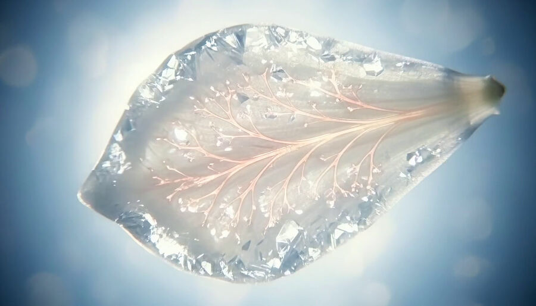
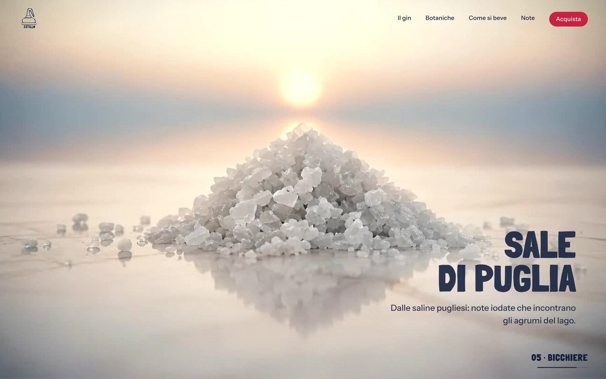

Shipped2026
Extillo Gin
Scroll-film website for an Italian craft gin
One continuous shot, driven by your scroll: from Lake Iseo to the salt pans of Puglia and into the glass, ending on the real bottle and the buy button.
What it took
- Art direction
- Image-to-video
- Scroll engines
- Claude Code
- Concept
- Three proposals, stress-tested before choosing one. Palette and tone taken from the bottle label.
- Images
- Key frames generated in sequence, each from the one before, so light and colour stay consistent.
- Film
- Six chained image-to-video clips, 25 seconds in 1080p. Every seam measured, not just looked at.
- Website
- 601 frames on canvas, text on cue, purchase section and a mobile version, at 60 fps.
How I made it
The brief
Extillo is a savoury gin, distilled in a 45-litre still with botanicals from Lake Iseo and salt from the salt pans of Puglia. The site had to make people feel that journey, and lead to a purchase.
The idea: a single shot that starts at the lake, passes through the citrus, enters an orange blossom, turns it into salt crystals and arrives at the glass. The real bottle slides into frame at the end.
The process
Concept and direction
Three proposals, stress-tested before choosing one. Palette, fonts and tone taken from the bottle label.
Key frames
Images generated in sequence, each starting from the previous one, to keep light and colour consistent.
Film
Six chained image-to-video clips: each starts from the real last frame of the one before. Every seam measured, not just looked at.
Website
Scroll-film page on canvas with 601 frames, text that comes in on cue, a purchase section and a mobile version.
From petal to salt
The hardest passage: a petal fills with crystals and becomes a heap of salt. I built the sequence frame by frame, then handed it to the video model.



